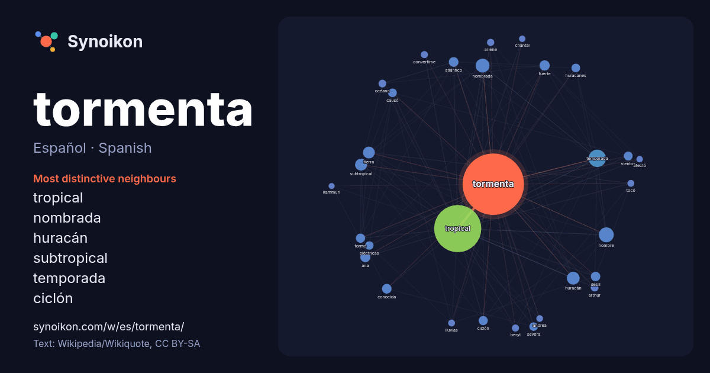

Español · Spanish · word of the day list
tormenta
“storm” · The words found around it in 1464 instances from Spanish Wikipedia, Wikiquote.

Most distinctive neighbours
- tropical 523×
- nombrada 55×
- huracán 49×
- subtropical 45×
- temporada 28×
- ciclón 28×
- atlántico 27×
- débil 27×
- ana 26×
- huracanes 25×
- severa 24×
- causó 23×
- vientos 20×
- eléctricas 20×
- arlene 19×
- arthur 19×
- formó 19×
- fuerte 18×
- beryl 18×
- océano 16×
× = how many times more often than in general Spanish Wikipedia text.
Most frequent neighbours
- tropical 739
- temporada 100
- nombre 74
- nombrada 64
- huracán 54
- subtropical 48
- tierra 47
- fuerte 35
- ana 34
- atlántico 32
- conocida 31
- débil 30
- formó 29
- ciclón 28
- convirtió 27
- vientos 26
- causó 25
- huracanes 25
- sistema 25
- eléctricas 24
In context
- la tormenta del mismo año equivalía al diámetro de la Tierra. La tormenta se observó antes, en septiembre de 1990, y adquirió el nombre de Tormenta Dragón Wikipedia snippets · Tormenta
- que Tormenta recuperó por entero su memoria al regresar a la nave de Nanny. Gambito decidió llevar a Tormenta de regreso a la Mansión-X. Tormenta fue Wikipedia snippets · Tormenta (personaje)
- corta el flujo de entrada de la tormenta, la corriente ascendente desaparece y la tormenta se disipa. Las tormentas eléctricas en una atmósfera prácticamente Wikipedia snippets · Tormenta eléctrica
- Una tormenta ígnea es una conflagración de gran intensidad que es capaz de crear y mantener su propio sistema de vientos. Suele ser un fenómeno natural Wikipedia snippets · Tormenta ígnea
- Una tormenta de arena, tormenta de polvo o polvareda es un fenómeno meteorológico ocasionado por ráfagas fuertes de viento que arrastran y levantan a Wikipedia snippets · Tormenta de polvo
- Una tormenta geomagnética, también llamada tormenta solar, es una perturbación temporal de la magnetósfera terrestre que puede ser causada por una onda Wikipedia snippets · Tormenta geomagnética
- término tormenta puede referirse a: tormenta, fenómeno atmosférico; tormenta eléctrica, caracterizada por los fenómenos de rayos y truenos; tormenta de hielo Wikipedia snippets · Tormenta (desambiguación)
- mexicano de ‘La tormenta’». El Telégrafo. 2 de julio de 2013. Consultado el 26 de junio de 2021. «PRODU | Ficha técnica: La tormenta». produ.com. Consultado Wikipedia snippets · La Tormenta (telenovela de 2005)
More Spanish words
- agua
- arte
- bosque
- caballo
- camino
- campana
- canción
- ciencia
- ciudad
- clima
- comida
- corazón
- desierto
- dinero
- dios
- espejo
- estrella
- familia
- fuerza
- gato
- historia
- invierno
- isla
- jardín
- lengua
- lluvia
- madre
- mapa
- miel
- montaña
- muerte
- naturaleza
- oro
- otoño
- pan
- perro
- puente
- reloj
- sal
- salud
- silencio
- sombra
- tiempo
- trabajo
- tren
- té
- verano
- verdad
- vida
Precomputed on 2026-10-09 with default settings (±5 words, medium corpus). The interactive map can refresh it with live data.